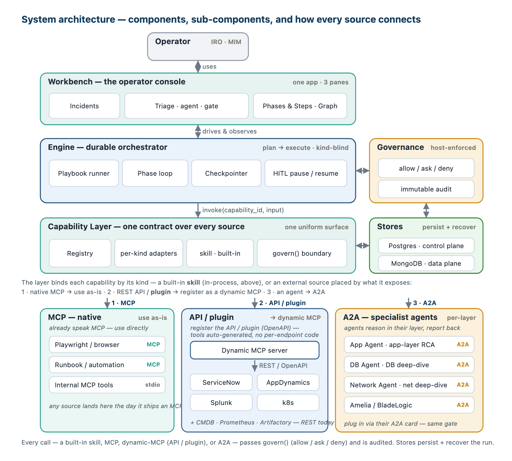
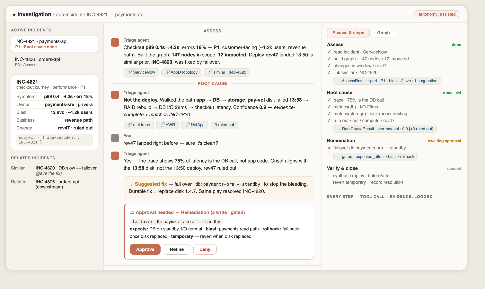
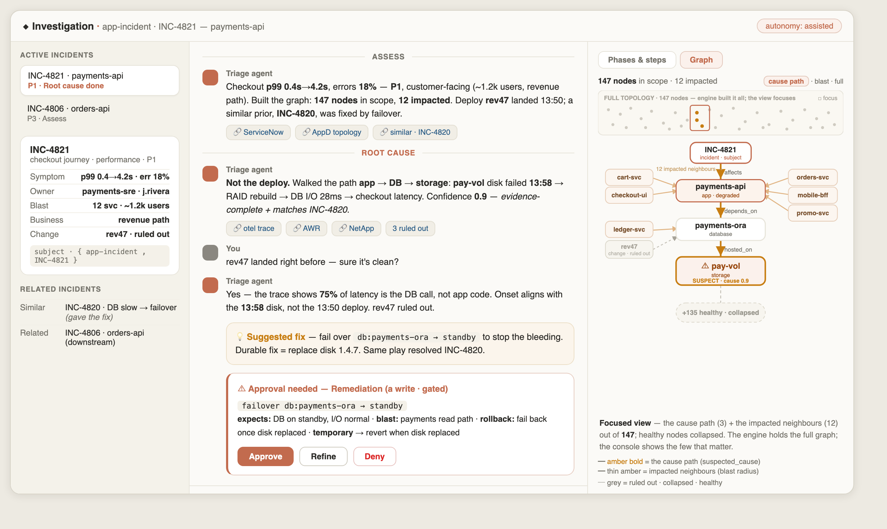

The complete design, in one place: the system, the engine on LangGraph, the capability layer, the full data model, the physical/LLD detail, operations, and the release schedule. Domain-neutral; incident triage is the first domain.
A governed, in-house investigation engine for production operations. One engine runs a versioned playbook through gated, audited phases; it builds a graph of the situation, reasons over it with the model, calls governed capabilities (never tools directly), and a human approves every write. The first domain is incident triage; the same engine runs other domains by loading a different playbook.
| Goal | How the design meets it |
|---|---|
| No vendor lock-in | the engine calls abstract capabilities; a source can change without touching the engine (Part C). |
| No domain lock-in | everything domain-specific is in the playbook (types · phases · outputs); the engine, shapes, registry, governance, storage and console are universal (A2). |
| Governed at the boundary | every call passes allow / ask / deny; every write is human-approved; closing is human (B5, C3). |
| Durable + reversible | checkpointed, exactly-once, resumable; every write carries a rollback (B5, E4). |
| Evidence-based + auditable | every fact carries an evidence_ref; the Step journey is the audit trail (D, F2). |
| Gradual | Amelia runs alongside, wrapped as a governed capability, dialled down per proven slice (G1). |
| Level | What it is | Domain-specific? |
|---|---|---|
| Engine | the shapes (Node·Edge·Fact·PhaseRecord·Step), the run loop, govern(), gates, retries, clustering, the registry, feedback, storage, the console | No — universal |
| Playbook | the type system (graph_schema), the phases (+ needs/effect), the output contracts | Yes — one file per domain |
| Runtime | the concrete nodes/edges/records of one investigation | instances |
SubjectRef {domain, id, kind} (unique key (domain, id)), never a hardcoded incident_id — so the engine never assumes the word "incident". incident-triage fills it {app-incident, INC-4821}; provisioning {provisioning, REQ-123}.
| Component | Responsibility | Where |
|---|---|---|
| Engine (orchestrator) | loads the playbook; runs the phases; drives the per-phase model loop; enforces effect; checkpoints; re-enters | Part B |
| Capability layer | resolves intents → concrete capabilities; binds sources by kind; runs govern() | Part C |
| Capability registry | Provider · DeclaredCapability · CapabilityPolicy | C2 · E1 |
| Graph builder | builds/updates the per-incident graph; clustering; the cause walk | D1 |
| Stores | Mongo (incident docs) · Postgres (playbook + registry) · LangGraph checkpointer (run state) | D4 · E1–E2 |
| Console | the single operator UI — three panes + inline gate + graph view | F1 |
| Connectors | native MCP · dynamic-MCP (OpenAPI) · A2A specialists (App/DB/Network; Amelia/BladeLogic wrapped) | C1 |
On startup (and on every playbook publish), the engine loads the playbook row from Postgres and compiles it into a LangGraph StateGraph. The playbook is data; the compiled graph is what runs.
phases[] (each with id · effect · needs · output · min_confidence?), graph_schema (node_types, edges, facts, labels, conventions), output_schemas, defaults, unknown_access, error_handler.graph_schema (so the graph builder + UI know the vocabulary) and the output_schemas (JSON Schema, used to validate each phase output, D3/E).interrupt_before on writes (B5), and the checkpointer.def compile_run(playbook): # playbook = the Postgres row, pinned @version pb = parse_frontmatter(playbook.body_md, playbook.phases, playbook.schemas) validate(pb) # phases, graph_schema, output_schemas well-formed register_types(pb.graph_schema) # node_types / edges / facts → graph builder + UI register_schemas(pb.output_schemas) # JSON Schema per phase output g = StateGraph(RunState) for ph in pb.phases: g.add_node(ph.id, make_phase_node(ph, pb)) # B3 — the agent loop for this phase g.set_entry_point(pb.phases[0].id) # assess wire_edges(g, pb.phases) # sequential + conditional (B6) return g.compile(checkpointer=PostgresSaver(...), # B5 — durable, resumable interrupt_before=["__gate__"]) # pause before any write
Because the phases, types and contracts all come from the playbook, compiling a different playbook yields a different engine behaviour with zero code change — the domain-neutral promise, realized at compile time.
One run = one LangGraph thread_id. The state is the working set every phase reads and writes; LangGraph checkpoints it after each step.
class RunState(TypedDict):
subject: SubjectRef # {domain, id, kind} — the thing under investigation
playbook_ref: str # "incident-triage@1.0.0" (pinned for reproducibility)
graph: InvestigationGraph # nodes / edges / facts — SHARED across all phases (Part D)
phase_records: Annotated[list, append] # one PhaseRecord per phase entered (D2)
messages: Annotated[list, append] # the conversation (operator + agent)
current_phase: str
pending_gate: Optional[Action] # set when a write is awaiting approval (B5)
status: str # running | waiting_approval | waiting_input | done | failed
The graph is the shared world (it persists and grows across phases); each PhaseRecord is one phase's journey + typed output. On phase completion the engine writes through to the Mongo incident document (D6); the live state stays in the checkpointer until close.
Each phase node is a model-driven agent loop, bounded by the phase's needs (which intents it may use) and effect (read-only or write). The model plans, then loops — pick a need, call a capability, fold the result into the graph, log a Step, update the output — until the typed output is sufficient (its required fields are present + validate).
def make_phase_node(ph, pb):
def node(state):
rec = PhaseRecord(id=f"{state.subject.id}:{ph.id}:{attempt(state, ph)}",
phase=ph.id, goal=ph.goal, plan=model.plan(state, ph), steps=[])
while not sufficient(rec.output, pb.output_schemas[ph.output]):
need, args = model.next_action(state, rec, allowed=ph.needs) # 1 · model picks an INTENT
result = capability_layer.call(need, args, effect=ph.effect, state=state) # 2 · Part B4 / C
fold_into_graph(state.graph, result) # 3 · nodes / facts / edges + side-effects
rec.steps.append(Step(kind="tool_call", capability=result.cap_id,
input=args, result=result.data,
touched=result.node_ids, evidence=result.evidence))
rec.output = model.update_output(rec, state.graph) # 4 · build the typed output incrementally
if model.wants_operator(rec): return pause(state, "waiting_input") # ask a question
validate(rec.output, pb.output_schemas[ph.output]) # 5 · contract check (E)
state.phase_records.append(rec); write_through_to_mongo(state)
return state
return node
Steps are emergent, not scripted — the model decides the next need each iteration given what the graph already shows (e.g. "the DB span dominates → look below the DB"). The loop ends when the output is sufficient; reasoning, suggestions and the gate decision are also Steps (different kind).
Step 2 above — capability_layer.call(need, …) — is where intents become governed, real calls, every iteration of the loop. The layer never lets the model touch a tool directly.
def call(need, args, effect, state):
caps = resolve_intent(need, effect) # C4 — match DeclaredCapabilities by intent + effect
cap = rank(caps)[0] # by trust, freshness, fit
dec = govern(cap, playbook_of(state)) # C3 — effect × access (allow | ask | deny)
if dec.access == "deny": raise Denied(cap) # model must find another path / escalate
if dec.access == "ask": return request_gate(cap, args, state) # B5 — pause for approval
raw = invoke(cap, args) # native MCP | dynamic-MCP | A2A (C1)
return Result(cap_id=cap.id, data=raw,
node_ids=raw.touched, # which graph nodes this read/wrote
evidence=raw.evidence_refs) # deep links — fold into Fact.evidence_ref + output
| In the loop | What happens |
|---|---|
| resolve_intent | need (e.g. metrics) → DeclaredCapabilities tagged with that intent whose effect is compatible with the phase (a read-only phase can never select a write capability). |
| govern | resolves effect × access at call time; read → usually allow; write → ask (the gate); unknown → playbook.unknown_access. |
| invoke | dispatches to the connector for the provider's kind — native MCP, a dynamic-MCP-wrapped API, or an A2A specialist agent. |
| fold | the result updates the graph (new/updated nodes, facts with evidence_ref, edges) and the Step records touched[] + evidence[]. |
The gate. A write capability (effect=write) in a gate_writes phase resolves access=ask. The phase sets pending_gate and the compiled graph's interrupt_before pauses the run (status=waiting_approval) — the engine returns control to the operator with the proposed Action (its expected_effect · blast_radius · rollback · temporary/revert_when).
Resume. The operator answers via the API (approve | refine | deny); the engine resumes the checkpointed thread. On approve it invokes (guarded by the idempotency key — exactly-once even on double-approve), records a decision Step + the action result, and continues.
# resume path if seen(action.idempotency_key): return cached_result # exactly-once result = invoke(action); record Step(kind="decision", decision=op.decision, actor=op.actor) # checkpoint: LangGraph persists RunState after EVERY step (PostgresSaver, thread_id = run_id), # so a pause or crash resumes exactly where it stopped — no work lost, no double write.
Phases run in declared order, but two edges are conditional — this is what makes the run adaptive and re-enterable, not a fixed pipeline.
g.add_edge("assess", "root_cause")
g.add_conditional_edges("root_cause",
lambda s: "root_cause" if top_confidence(s) < min_conf(s) else "remediation") # gather more, or proceed
g.add_conditional_edges("verify",
lambda s: "root_cause" if not recovered(s) else END) # backtrack with new evidence, or close
A re-entered phase opens a new attempt (…:root-cause:2); the graph and prior records are retained as context, so the second pass is better-informed. A human performs the final close after Verify reaches END.
cluster via member_of), or open a new triage. It never auto-merges and never runs "at cluster scope" — each incident keeps its own session, phases, and closure; a linked cluster just lets the shared cause/fix propagate.The state machine, walked end to end on the worked incident (failed disk → RAID rebuild → DB I/O → checkout latency).
incident-triage@1.0.0; thread_id = INC-4821:run:1; seed the graph — INC-4821(incident), alert:7741, from incident-source.topology → app+DB+storage neighbourhood; telemetry → health; change-history → rev47 (recorded, not yet ruled out); similar-incidents → INC-4820 (its resolution → a suggestion). → AssessResult (perf · P1 · suspected_locus=DB · suggestion=failover). Checkpoint. Edge → root_cause.traces → 75% is the DB call; metrics → DB I/O 28ms; metrics(storage) → pay-vol disk reconstructing since 13:58; rule out rev47/gemini/network. → RootCauseResult (stor:pay-vol 0.9, basis stated, path app→db→storage). top_confidence 0.9 ≥ 0.7 → edge to remediation. Graph: stor:pay-vol gains suspect + a suspected_cause edge.failover db:payments-ora → standby with expected_effect/blast/rollback/temporary. govern() → write → ask → interrupt_before pauses (status=waiting_approval). Operator approves → resume → invoke (idempotency-guarded) → RemediationResult (applied; I/O 28ms→4ms) + a followups escalation to replace the disk.telemetry + synthetic-replay → p99 4.2s→260ms; recovered(s)=true → edge to END. → VerifyResult (resolution = failover + disk replacement; temporary action scheduled to revert). Human closes. Final state written through to the Mongo incident document (D6).| State | What it is · cost |
|---|---|
| Free chat | per-user, "new chat" — exploratory; no run, no graph, no playbook; a TTL'd scratch. Near-zero cost; may never promote. |
| Promotion | once identity + subject {domain, id} are known → the related-incident check (above) → the operator creates a new session or joins an existing one for that subject. Human-confirmed. |
| Shared session | keyed by the subject = one thread = one run (B2); several operators/devices live in it at once; closes with the incident. |
One incident = one run, but requests land on any server and operators share it. The crux: a step that is in-flight (the agent mid-thought, streaming, calling a tool) lives in one server's memory — it isn't checkpointed yet.
| Mechanism | How |
|---|---|
| Serialize the run | advancing a session takes a per-session lock (a Postgres advisory lock on the subject id). The holder is the transient run-owner and drives the agent loop — one step at a time. No second run can start for the incident. |
| Input during an in-flight step | a 2nd operator's message is queued (a per-session input queue), drained after the current step or at the next gate — merged into the one run, never spawning a second. |
| Reads & chat go anywhere | only advances need the lock; reads (render graph/phases) hit the Mongo read-model and chat is polled from the event log (B8.3) — both from any server. No sticky load-balancing. |
| Crash mid-step | the lock lease expires → another server resumes from the last checkpoint; the lost step re-runs (reads idempotent, writes idempotency-keyed). No work lost, no double-write. |
In-memory = only the active step, on the owner, transiently. The durable truth is the LangGraph checkpoint + the read-model — so any server takes over between steps.
Several operators, possibly on different servers, must see the same conversation, the agent's live stream, and the gate — in real time.
| Mechanism | How |
|---|---|
| One event log per session | an append-only log keyed by the subject. Every event — a user message, an agent message, a gate prompt, a gate decision, a phase/graph delta — is appended with a per-session sequence number. |
| Append, don't push | the agent appends its output to the log; any connected client (on any server) sees it on its next poll — not just the operator who triggered the step. |
| Clients = snapshot + polled deltas | a client renders the heavy state from the read-model (the graph/phases snapshot) and applies the deltas it polls from the log. The log carries the conversation + change events; the read-model carries the structured truth. |
| Join mid-flight / reconnect | fetch the snapshot (read-model + recent chat) and poll from the last seq → no lost or duplicated messages. |
Backend: an append-only event log in the read-model store (Mongo, or Postgres); clients poll since(seq) for correctness, and may upgrade to SSE (/stream, Last-Event-ID; B8.5) for live delivery over the same seq interface. No push bus — no Redis, no WebSocket fan-out: every server answers a poll/stream statelessly from the shared store, so there is no cross-server fan-out. (A WebSocket + a bus like Redis / Postgres LISTEN/NOTIFY remains a later option behind the same seq interface; correctness never depends on it.)
One ordered stream. Chat, graph deltas, and phase deltas all ride the same log under one sequence; the read-model snapshot is consistent to a seq, so a client renders the snapshot and applies only the deltas after it — no cross-path races between "the graph changed" and "the agent said…". Scaling: serialize within a session (one run-owner), run across sessions in parallel (different owners) — the system scales by incident count, not by serializing everything.
| Case | Handling |
|---|---|
| Gate while in-flight | the write gate pauses the run (no active step) → the run-owner lock releases → any operator can answer (answered-once, idempotent on the decision) → resume re-acquires the lock. |
| Two operators approve at once | answered-once + optimistic checkpoint version — first wins, the rest see it resolved. |
| Operator joins mid-investigation | snapshot (read-model + recent chat) + start polling from that seq → current state + live. |
| Network drop / reconnect | snapshot + resume-from-seq; client message ids dedupe a resend. |
| Backtrack (Verify → Root cause) | same session/thread, a new attempt (B6); chat + graph continue — the session does not restart. |
| Long session / compaction | the agent's context = the current phase + prior phase OUTPUTS + on-demand graph slices (B3/B4), not the raw history. The chat pane shows full history from the store; the agent context stays bounded. |
| Free chat never promoted | TTL-expires; no durable cost. |
| Any domain | identical machinery — the session is keyed by {domain, id}, so provisioning/capacity sessions work the same. |
| Create-or-join race | two operators promote to the same subject at once → session creation is idempotent on the subject id (a unique key): the first creates the thread, the rest attach. Never two threads for one incident. |
| Promotion carries context | the free chat's prior messages seed the session's conversation — promotion is not a reset. |
| Headless / idle session | the run can advance (an autonomous step) or sit at a gate with no client connected; events persist → a late joiner replays them; a gate that sits too long escalates (error_handler). |
| Slow vs crashed owner | the lock is a lease with a heartbeat — a slow tool keeps the lease; a dead owner lets it expire → another server resumes (B8.2). Distinguishing the two is why the lease heartbeats. |
| Authorization mid-session | incident membership is re-checked per event, not only at join — a revoke drops the operator on the next event. |
| A missed / failed poll | polling is liveness-only — a dropped request just retries on the next tick; the run still advances (the lock + checkpointer don't depend on it). Correctness lives in the stores, never the transport. |
The pen. One member holds the pen (the single human writer) at a time — only the pen-holder may send a message or approve a gate; everyone else is a read-only viewer. (The pen is the human write-token — who may act; it sits above the run-owner lock of B8.2, which serialises the engine's one run — different mechanisms, same "one at a time" spirit.) The pen is handed over (take-pen / release-pen, one holder at a time; the creator starts with it). The agent runs one unit of work to completion, then takes the next message — strictly sequential. Approval is single — the pen-holder's OK is enough; no dual approval (a maker-checker rule is future). Roles are enforced in the UI and re-checked at the server.
The chat UI. The chat is a heterogeneous stream of typed events ordered by seq; each renders via a widget registry (kind → component: text · agent step / tool-call · table · image · graph · sandboxed-iframe HTML for untrusted/agent-generated UI). A new widget type = one renderer, no core change; untrusted HTML is isolated in a sandboxed iframe (the safety seam — aligns with the open MCP-Apps pattern). Transport: SSE (GET /stream, resume via Last-Event-ID) for the live app, polling as the simple fallback — both over the one event log, so a widget is just a richer event payload, independent of the transport.
A per-incident, in-process graph: nodes by id (facts embedded), typed edges (out + in adjacency), per Part D. It is small (the working slice, not the estate) — so an in-memory structure is enough; no graph DB.
| Choice | Stance |
|---|---|
| Library | networkx (Python, in-process) — mature, cycle-safe traversal (descendants, shortest_path, subgraph). A custom typed adjacency structure is the fallback only if footprint/perf demands; per-incident the graph is small, so networkx is the KISS default. |
| Where it lives | the hot working copy on the run-owner (B8.2) — loaded from the durable graph when a step starts, mutated, checkpointed. Not a persistent in-memory server. |
| Durable form | the Mongo incident document (the graph as JSON, D6) + the LangGraph checkpoint. The in-memory copy is transient. |
The LLM never receives the raw graph; it gets a small, governed tool surface (capabilities, gated like any other, Part C). Mostly read (traverse/expand) + one write (annotate a finding, with provenance). Bulk graph-building is automatic — the engine folds each tool result (B9.4); the LLM only queries + records explicit findings.
| Tool | Effect · what it does |
|---|---|
| graph.get(id) | read · a node + its facts. |
| graph.neighbours(id, edge?, dir?) | read · adjacent nodes — expand the frontier. |
| graph.walk(from, edges[], dir, until?) | read · traverse a path (e.g. depends_on/hosted_on downward to the cause). |
| graph.find(predicate) | read · nodes matching — unhealthy, impacted, by layer/type. |
| graph.blast_radius(id) | read · the impacted set (walk affects/depends_on). |
| graph.path(from, to) | read · the shortest causal path. |
| graph.annotate(target, key, value, evidence_ref) | write · the agent records a finding (a fact/label/edge — e.g. mark suspect) — validated + provenance-stamped (which step). This is "build as it goes," governed. |
Read tools resolve effect: read-only (allowed); annotate is a write but low-risk — it changes the agent's own working graph, not the world — so it is audited, not gated like a remediation.
Each turn a deterministic render-slice projects the graph into the context — bounded regardless of size:
suspect/impacted) + their facts, and the 1-hop frontier (adjacent un-expanded nodes, as stubs the agent can expand).So even a 147-node incident renders ~10–30 nodes; the graph carries the memory, the slice shows only what's live. This is the compaction (B3) — the agent sees the distilled world + prior phase outputs, never the raw history.
| Step | What happens |
|---|---|
| Load | rebuild the in-memory graph from the Mongo doc + checkpoint when a step starts (cheap — small). |
| Fold (the adapter) | each capability result is mapped into nodes/facts/edges by a per-capability fold-adapter (topology → nodes + depends_on; metrics → facts on a node; an alert source → an alert node + observed_on). The adapter is the only place a source's shape meets the graph schema (Part D) — a new source = a new fold-adapter, no engine change. |
| Mutate | folds + the agent's annotate apply to the in-memory graph, validated against the Part D node/edge types. |
| Checkpoint | after the step, the graph delta is checkpointed (LangGraph) + materialized to the Mongo doc — the read-model the UI + reads use. |
Concurrency: single writer per session (the run-owner lock, B8.2) → no concurrent mutation → no merge conflict. Reads (the UI Graph pane) hit the Mongo read-model from any server. Reuse across incidents: the graph is per-incident; cross-incident knowledge comes via related/similar (the learning loop — the suggestions field), not a shared graph. A persistent estate graph, if ever added, is a read-mostly source the engine pulls topology from — never the mutable investigation surface.
| Case | Handling |
|---|---|
| Unknown node id | a tool references an id not in the graph → return "unknown"; the agent adds it (fold/annotate) or picks another path. Never silently invent. |
| Conflicting facts | two sources disagree on a node's health → keep both (source + confidence + observed_at); the disagreement stays visible; reconcile by confidence/recency. The graph never silently overwrites. |
| Graph grows large | the render-slice collapses aggressively (path + frontier only); the agent expands on demand; in-memory stays small (per-incident). |
| Expand too wide | neighbours/walk cap depth + breadth → "N more, collapsed"; the agent narrows. |
| Cycles (depends_on loops) | traversal is cycle-safe (visited set; networkx handles it). |
| Orphan node (an alert not yet linked) | allowed; the agent links it (annotate) once it learns the relation. |
| Idempotent fold (crash re-run) | folding is idempotent — keyed by (node id, fact key, source, observed_at) — so a replayed step never duplicates. |
| Annotate hallucination | annotate is validated vs the Part D type system and requires an evidence_ref — a finding with no evidence is rejected; bad annotations are auditable + reversible. |
The engine calls abstract capabilities; the layer binds each source by its kind, in this onboarding priority:
| Kind | When · examples |
|---|---|
| native MCP | the tool already speaks MCP → use directly. |
| dynamic MCP (API) | a REST tool with an OpenAPI spec → register as a dynamic MCP server, no per-endpoint code. |
| A2A agent | per-layer specialists — App / DB / Network / Storage root-cause; Amelia / BladeLogic wrapped as governed capabilities. |
| Entity | Role · key fields |
|---|---|
| Provider | a source — id · name · kind (skill\|mcp_local\|mcp_remote\|a2a_agent\|api) · connection · trusted · status · last_synced. |
| DeclaredCapability | one action — id (provider__action) · provider · description · input_schema · output_schema · effect_hint · intents[] (which needs it satisfies). |
| CapabilityPolicy | human-owned — capability_id · effect · access (allow\|ask\|deny) · status (active\|pending_review) · reviewed_by · reviewed_at. A new capability lands pending_review · deny. |
DDL is in E1. Declarations are machine-synced and refresh; the policy is human-owned and sticky across syncs.
govern() — resolved at call time, every timeeffect = policy(cap).effect ?? cap.effect_hint ?? "unknown"
access = policy(cap).access ?? (playbook.unknown_access if effect=="unknown"
else DEFAULT[trust(cap)][effect])
| access | behaviour |
|---|---|
| allow | invoke directly, then audit. |
| ask | pause (interrupt) → operator approve / refine / deny → on approve, invoke; record the decision. |
| deny | refuse; the model finds another path or escalates. |
def resolve_intent(need, phase_effect):
return rank([c for c in declared_capabilities
if need in c.intents # satisfies the intent
and compatible(c.effect_hint, phase_effect)]) # read-only phase ⇒ no write caps
The playbook names needs:[metrics, logs, …]; resolution turns each into the concrete, allowed capability. The effect boundary is enforced here, at resolution — not only at the gate — so a read-only phase provably cannot select a write.
Operator feedback (D5), kept separate from the run, drives an autonomy ladder per phase × node-type × severity: a proven low-risk action can move ask → allow (earned autonomy); a declared failure/correction moves it back. Autonomy is narrow, evidence-based, and always reversible — the same CapabilityPolicy row is what changes.
incident node — the subject of this investigation. Other incidents are referenced and actively used (correlate · carry knowledge · link), never loaded as full nodes — they live in their own documents; related_to holds an id + kind. When incidents share a cause, the engine surfaces the match and the operator may link them into a cluster (member_of) — a human-confirmed grouping, not a separate run; each incident keeps its own session, phases, and closure. One playbook (incident); no "cluster playbook."{
"id": "app:payments-api", // kind:name — stable; everything refers to a node by id
"kind": "system", // value from the playbook's node_types
"type": "app", // a type within the kind (or "generic")
"layer": "app", // system only: business|app|database|network|storage|compute|location|external
"name": "Payments API",
"labels": ["pci","tier-0","suspect"], // open tags; some drive triage
"props": { "owner_team":"payments-sre", "on_call":"j.rivera" },
"facts": [ /* Fact[] — observations made during the run */ ],
"summary": "degraded since 14:02; DB-backed latency", "sources": ["servicenow-cmdb","appd"]
}
| Field | Meaning |
|---|---|
| id · kind · type · layer | stable id (kind:name); the top category + specific type from the playbook's node_types; layer (system nodes) tells the engine which deep-dive applies. |
| name · labels[] · props{} | label; open tags (conventional: suspect·policy_block·central); source attrs + ownership. |
| facts[] · summary · sources[] | embedded observations (below); rolling summary; tools that contributed. |
| kind | type | represents |
|---|---|---|
| system | business_service · app · service · component · database · network_device · storage · compute · zone · region · external_service · generic | the estate, by layer; generic = the escape hatch (never dropped). |
| incident | incident · cluster | the one subject; or the cluster it belongs to. |
| change | change | a deploy / config / flag / ticket. |
| alert | alert | a fired alert — its own node (identity + lifecycle). |
{
"key": "health", "value": "degraded", "source": "appd",
"evidence_ref": "appd://payments-api/bt?t=14:02", // deep link — auditable
"observed_at": "2026-06-18T14:02Z", // NO ttl — freshness judged at read time
"confidence": 0.9,
"impact_state": "degraded" // erroring|degraded|stalled|lagging|wrong-data|ok — SEPARATE from health
}
| Field | Meaning |
|---|---|
| key · value · source | what's observed + value + the tool. |
| evidence_ref | deep link to backing data — the fact is auditable (this is why no separate Evidence entity is needed). |
| observed_at · confidence | no ttl — freshness judged at read time; 0–1, discounted for noisy sources. |
| impact_state NEW | distinct from health — a health:ok node can still be impacted (lagging, wrong-data) and counts toward blast radius. |
{
"type": "suspected_cause", "from": "INC-4821", "to": "stor:pay-vol",
"props": { "confidence":{"value":0.9,"basis":"evidence-complete + matches INC-4820"},
"rank":1, "path":["app:payments-api","db:payments-ora","stor:pay-vol"] }
}
| edge | connects · meaning |
|---|---|
| part_of · depends_on · runs_on · hosted_on · routes_to · located_in | containment · logical dependency · deployment · storage backing · network path · physical locality. |
| changed · affects · suspected_cause | a change touched a node · the incident impacts a node · the ranked cause (props: confidence{value,basis} · rank · path). |
| related_to · member_of | links other incidents (kind = child\|related\|caused_by\|chained\|similar) · is linked into a cluster (operator-confirmed). |
| observed_on · correlated_into | an alert fired on a node · the alert was grouped into the incident/cluster. |
| rule | meaning |
|---|---|
| policy_block | a node healthy on its own signals but the cause (a bad firewall rule, expired cert, bad data) — a change/fact on a healthy node on the victim's path → suspect despite health. |
| realized_by | depends_on.props.realized_by names the physical path of a logical dependency — blast-radius and fault-localization reconcile. |
| alert_noise · cluster | noisy alerts count for clustering, discounted for cause-confidence; on a shared fingerprint + converging walk the engine surfaces the match and the operator links the incidents into a cluster — never auto, never a separate run. |
{
"id": "INC-4821:root-cause:1", // subject.id:phase:attempt
"subject": { "domain":"app-incident", "id":"INC-4821", "kind":"incident" }, // SubjectRef
"phase": "root-cause", "goal": "Find the most probable cause — ranked, with evidence.",
"state": "done", // active|waiting_input|waiting_approval|blocked|done|failed
"plan": "Walk below the app; correlate vs rev47; rank with a path.",
"steps": [ /* Step[] */ ], "output": { /* the typed output */ },
"summary": "Cause = pay-vol disk failure, conf 0.9.", "opened_at":"14:04", "closed_at":"14:07"
}
| Field | Meaning |
|---|---|
| id · subject | subject.id:phase:attempt (attempt enables backtrack re-runs); the SubjectRef {domain, id, kind} — the one incident this record belongs to (no "cluster scope"); never a bare incident_id. |
| phase · goal · state · plan | which phase + its goal (from the playbook); lifecycle; what it set out to do. |
| steps[] · output · summary | the ordered journey (below) — the audit; the typed result (D3); rolling summary. |
{
"seq":2, "at":"14:04:30", "kind":"tool_call", // tool_call|reasoning|suggestion|decision|user_input
"capability":"traces", "input":{"trace":"checkout"}, "result":{"db_span_ms":3140},
"touched":["svc:checkout","db:payments-ora"], // → graph node/fact ids
"evidence":["otel://trace/9af3"], "note":"75% of latency is the DB call"
}
// other kinds: suggestion → {proposal, rationale} · decision → {decision, actor} · user_input → {message}
| Field | Meaning (by kind) |
|---|---|
| seq · at · kind | (all) order · timestamp · the discriminator. One ordered log = the audit (subsumes the HLD's Action+HumanInteraction+RunEvent). |
| capability · input · result | tool_call — the capability (from a need, never hardcoded) + args + return. |
| touched[] · evidence[] | tool_call — the two hooks: touched → the graph; evidence → the output. |
| proposal/rationale · decision/actor · message | suggestion · decision (the gate) · user_input. |
{ "id":"INC-4821:root-cause:1",
"subject":{"domain":"app-incident","id":"INC-4821","kind":"incident"}, "phase":"root-cause", "state":"done",
"steps":[
{"seq":2,"kind":"tool_call","capability":"traces","result":{"db_span_ms":3140,"pct":"75%"},
"touched":["svc:checkout","db:payments-ora"],"evidence":["otel://trace/9af3"]},
{"seq":4,"kind":"tool_call","capability":"metrics(storage)","result":{"disk":"reconstructing since 13:58"},
"touched":["stor:pay-vol"],"evidence":["netapp://aggr01/disk/1.4.7"]}, // ROOT
{"seq":7,"kind":"suggestion","proposal":"Cause: pay-vol disk failure. Conf 0.9."},
{"seq":8,"kind":"decision","decision":"approve","actor":"j.rivera"} ], // the gate
"output":{ "candidates":[{"cause":"pay-vol disk failure → RAID rebuild → DB I/O","node":"stor:pay-vol",
"confidence":{"value":0.9,"basis":"evidence-complete + matches INC-4820"},"rank":1,
"path":["app:payments-api","db:payments-ora","stor:pay-vol"],
"evidence":["otel://trace/9af3","netapp://aggr01/disk/1.4.7"]}], "selected":0, "status":"confident" } }
// chain: step.touched → graph · step.evidence → output.candidates[].evidence · suggestion(7) → decision(8) → output
// graph side-effect on commit: stor:pay-vol gains label `suspect` + an INC-4821 —suspected_cause→ stor:pay-vol edge
{ "incident_type":"performance", "symptom":"checkout p99 0.4s→4.2s, errors 18%",
"affected":["app:payments-api","biz:checkout-journey"],
"impact_assessment":{"scope":"customer-facing","blast_radius":["app:payments-api"],"bounded_by":null,
"severity":"P1","urgency":"high","business_impact":"checkout / revenue path"},
"changed":["chg:deploy-rev47"], // [] = checked & clean (not "unknown")
"time_factor":null, "suspected_locus":{"node":"db:payments-ora","why":"DB span dominates"},
"related":["INC-4820"], "cluster":null,
"suggestions":[{"possible_fix":"failover DB to standby","basis":"similar_incident","confidence":0.7}],
"owner":"payments-sre" }
Fields: incident_type NEW · symptom NEW · affected[] · impact_assessment (+ bounded_by) · changed[] ([] = checked & clean) · time_factor? · suspected_locus? NEW · related[]/cluster? NEW · suggestions[] (from priors — the learning loop) · owner.
{ "candidates":[{ "cause":"…", "node":"stor:pay-vol",
"confidence":{"value":0.9,"basis":"evidence-complete + matches INC-4820"}, // basis = WHY
"rank":1, "path":[…], "evidence":[…], "recommended_fix":"failover DB to standby" }],
"selected":0, "ruled_out":[{"hyp":"rev47 deploy","evidence":"trace shows DB cost, not app code"}],
"status":"confident" } // confident | needs-input | escalated
Fields: candidates[] (cause · node · confidence{value,basis} NEW · rank · path · evidence · recommended_fix? NEW) · selected NEW · ruled_out[] (+ killing evidence) · status.
{ "actions":[{ "action_id":"a1", "kind":"mitigate", "technique":"failover", "target":"db:payments-ora",
"expected_effect":"DB served by standby; I/O normal", "blast_radius":"payments read path",
"rollback":"fail back once disk replaced", "temporary":true, "revert_when":"incident_close",
"idempotency_key":"INC-4821-a1", "gated":true,
"approval":{"decision":"approve","actor":"j.rivera","at":"14:21"},
"result":"applied; I/O 28ms→4ms", "status":"done" }],
"followups":[{"detail":"replace disk 1.4.7","basis":"escalate","owner":"storage"}], "status":"applied" }
Fields: actions[] (kind reverse\|mitigate\|escalate · technique? · target · expected_effect NEW · blast_radius NEW · rollback NEW · temporary?/revert_when? · idempotency_key · gated · approval NEW · result NEW · status) · followups[] · status.
{ "recovered":true, "before_after":"p99 4.2s→260ms, errors 18%→0.2%",
"watch_window":"15m", "recovery_confidence":0.95,
"resolution":"failover to standby; durable fix = disk replacement", // what the next incident learns from
"temporary_actions_status":[{"action_id":"a1","status":"scheduled"}], // reverted | scheduled — must be clear
"residual":[{"item":"replace disk","owner":"storage"}], "closed_by":"j.rivera", "status":"closed" }
Fields: recovered (user's side) · before_after NEW · watch_window?/recovery_confidence? NEW · resolution NEW (the learning-loop field) · temporary_actions_status[] (must be clear) · residual[] · closed_by/status.
{ "domain":"app-incident", "id":"INC-4821", "kind":"incident" } // SubjectRef — unique key (domain, id); used by PhaseRecord, Feedback, the run, the read-model
| Plane · store | Holds · shape |
|---|---|
| data · MongoDB | the incident document — graph + phase outputs + feedback; denormalized, one per subject; one read (D6). |
| config · PostgreSQL | the playbook (md + version + fields) + the capability registry; normalized, versioned, governed (E1). |
| run · LangGraph | the live checkpoint + conversation; the engine's mechanism — not hand-modeled; materialized into the incident doc on close. |
playbook@version on the incident, subject {domain,id} from the run.{ "_id":"fb-9912", "subject":{"domain":"app-incident","id":"INC-4821"}, "run_id":"INC-4821:run:1",
"actor":"j.rivera", "kind":"outcome", // outcome | failure | correction
"verdict":"fix held; good call on the failover", "at":"2026-06-19T09:00Z" }
Kept apart from the run so it can't taint the audit; feeds the autonomy ladder (failure/correction lower autonomy) + the suggestions (outcome confirms the resolution).
// db.incidents — one per subject; nodes conform to the loaded playbook's graph_schema { "_id":"INC-4821", "domain":"app-incident", // global subject identity = (domain, _id) "incident_type":"performance", "symptom":"checkout p99 0.4s→4.2s, errors 0.5%→18%", "priority":"P1", "state":"closed", "owner_team":"payments-sre", "playbook":"incident-triage@1.0.0", "impact_assessment":{ … }, "graph":{ "nodes":[ {"id":"INC-4821","kind":"incident","type":"incident"}, // the ONE subject node {"id":"app:payments-api","kind":"system","type":"app","layer":"app","facts":[{"key":"health","value":"degraded","evidence_ref":"appd://…"}]}, {"id":"db:payments-ora","kind":"system","type":"database","layer":"database"}, {"id":"stor:pay-vol","kind":"system","type":"storage","layer":"storage","labels":["suspect"],"facts":[{"key":"latency_ms","value":22.4,"impact_state":"degraded","evidence_ref":"netapp://…"}]}, {"id":"chg:deploy-rev47","kind":"change","type":"change"}, {"id":"alert:7741","kind":"alert","type":"alert"} ], "edges":[ {"type":"depends_on","from":"app:payments-api","to":"db:payments-ora"}, {"type":"hosted_on","from":"db:payments-ora","to":"stor:pay-vol"}, {"type":"suspected_cause","from":"INC-4821","to":"stor:pay-vol","props":{"confidence":{"value":0.9,"basis":"…"},"path":[…]}}, {"type":"related_to","from":"INC-4821","to":"INC-4820","props":{"kind":"similar"}} ] }, // other incident = a reference "phases":[ {"phase":"root-cause","output":{…}}, {"phase":"remediation","output":{…}}, {"phase":"verify-close","output":{…}} ] }
Indexes: _id · incident_type · graph.nodes.id · graph.edges.type · related_to + a fingerprint/embedding index for similar-search. Links: playbook@version → config; {domain,id} ← the run, written through on close.
PostgresSaver) · live multi-user sync over an append-only event log — polling for correctness, SSE optional for liveness; no Redis / WebSocket push bus (B8) · capabilities reach sources over MCP · dynamic-MCP · A2A (Part C).CREATE TABLE playbook ( -- PK (id, version): every edit is a new immutable row id text, version text, domain text, status text, owner text, body_md text, phases jsonb, schemas jsonb, defaults jsonb, unknown_access text, changelog text, PRIMARY KEY (id, version) ); CREATE TABLE provider ( id text PRIMARY KEY, name text, kind text, -- skill|mcp_local|mcp_remote|a2a_agent|api connection jsonb, trusted bool, status text, last_synced timestamptz ); CREATE TABLE declared_capability ( id text PRIMARY KEY, provider text REFERENCES provider(id), -- id = provider__action description text, input_schema jsonb, output_schema jsonb, effect_hint text, intents text[], last_synced timestamptz ); -- intents[] = which needs it satisfies CREATE TABLE capability_policy ( -- human-owned, sticky capability_id text PRIMARY KEY REFERENCES declared_capability(id), effect text, access text, status text, -- access: allow|ask|deny ; status: active|pending_review reviewed_by text, reviewed_at timestamptz );
The LangGraph checkpointer uses its own Postgres tables (PostgresSaver); thread_id = the run id. We do not hand-model them (D4).
// db.incidents — one document per subject (shape = D6) { _id, domain, incident_type, symptom, priority, state, owner_team, playbook, opened_at, closed_at, impact_assessment, graph:{nodes,edges}, phases:[{phase,output}] } // db.feedback — operator verdicts, separate from the run (D5) { _id, subject:{domain,id}, run_id?, actor, kind, verdict, note, at } // indexes db.incidents.createIndex({ incident_type:1, state:1 }) db.incidents.createIndex({ "graph.nodes.id":1 }); db.incidents.createIndex({ "graph.edges.type":1 }) db.incidents.createIndex({ fingerprint:1 }) // + a vector index for similar-incident search
| Endpoint | Purpose |
|---|---|
| POST /runs | start a run: { subject:{domain,id}, playbook } → seeds the graph, begins Assess; returns run_id. |
| GET /runs/{id} | current state: current_phase, status, the pending gate (if any), the latest phase output. |
| POST /runs/{id}/resume | answer a gate / input: { decision: approve\|refine\|deny, actor, note? } → resumes the checkpointed run (B5). |
| GET /incidents/{id} | the denormalized incident document (graph + phase outputs) from Mongo. |
| POST /feedback | { subject, run_id?, actor, kind, verdict } → the feedback store (feeds the autonomy ladder). |
| POST /playbooks · /providers · /policies | config-plane admin (author/validate/publish a playbook; register a provider; set a policy). |
defaults.retry (max + backoff); permanent / blocked → error_handler (escalate to on-call).idempotency_key; a replay after a crash returns the cached result, never double-applies.The only operator UI — a React single-page app, in the Claude-Desktop three-pane shape: Incidents (left) · Triage — the whole incident's chat with the approval gate inline (center) · Phases & Steps with a Graph tab (right). It evolves as autonomy is earned (the autonomy badge).

Right pane on Phases & Steps — the four phases, each step, and its typed output (worked run: INC-4821).

Right pane switched to Graph — the investigation graph, cause path app → db → storage highlighted to the suspect; the deploy greyed as ruled-out, the similar prior a reference. One incident node (the subject); others are references.
| Concern | Design |
|---|---|
| Audit | the Step journey is append-only and IS the audit trail; every tool-call carries an evidence deep-link; approvals record actor + decision + time. Regulator-grade, reconstructable. |
| Security / hardening | secrets / KMS, encryption at-rest + in-transit, least-privilege capability scopes, audit immutability — in place before any write ships (gates M2). |
| Safety | read-only phases provably cannot write (the effect boundary is enforced at intent resolution, C4); every write is gated + reversible. |
| DR / resilience | checkpointed run state (resumable); RTO/RPO targets; a need with no healthy capability degrades gracefully + asks. |
| Feedback / learning | operator verdicts (D5) feed the autonomy ladder (C5) + the similar-incident suggestions. |
| Observability | the engine emits its own metrics (phase latency, gate decisions, autonomy mix) for the autonomy dashboard. |
| Milestone | Ships · exit |
|---|---|
| M0 Foundation | engine skeleton, registry, stores, govern(), checkpointer, console shell — an assisted run end-to-end on a read-only capability, in shadow. |
| M1 Assisted | Assess + Root cause (read-only), the full console + HITL surface — triages real incidents read-only on a pilot slice. |
| M2 Remediation | the first gated writes + Verify & close + rollback + error_handler — gated fixes execute safely, exactly-once. (Hardening baseline green.) |
| M3 Coverage | multi-app topology + incident relationships + A2A specialists + Amelia wrapped + playbook studio — handles a multi-app incident; N playbooks live. |
| M4 Autonomy | earned autonomy for proven low-risk actions + the feedback→policy loop + dashboard; Amelia ramped down per proven slice. |
Two parallel tracks: hardening gates production writes (in place before M2); Amelia runs alongside, is wrapped as a governed A2A capability, and is dialled down per proven slice. The full by-sprint plan + Gantt is the companion Delivery Plan.
| NFR | Target |
|---|---|
| Auditability | every action + decision reconstructable from the Step journey; immutable, regulator-grade. |
| Safety | no un-gated write; every write reversible; read-only phases provably cannot write. |
| Latency | assisted triage returns a first assessment in minutes; the gate is the only human wait. |
| Availability / scale | concurrent incidents; degrade gracefully when a source is down; engine horizontal. |
| Extensibility | a new source needs only a registry entry; a new domain only a new playbook — no engine change. |